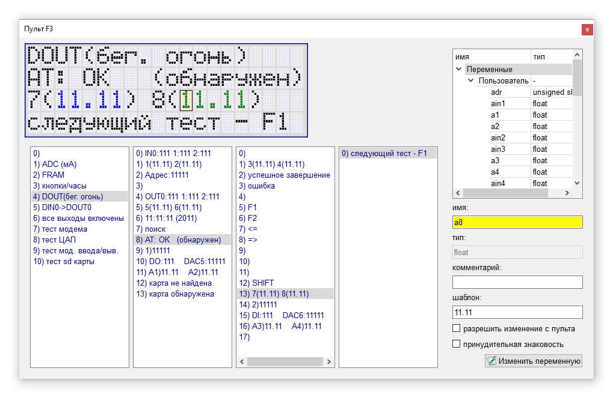
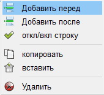
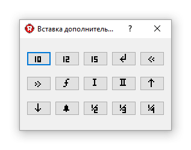

Один из каналов RS485 в контроллерах может быть задействован для подключения символьного пульта. Формат пульта - 4 строки по 20 символов. Для вывода информации могут быть задействованы символы латиницы, кириллицы, цифры, знаки пунктуации и ряд спецсимволов.
Для каждой строки в редакторе пульта задаётся набор видов. Программа контроллера в свою очередь управляет какой именно вид должен быть активен в данный момент времени. Управление происходит через переменные st1, st2, st3 и st4, которые задают номер вида для строки (st1 для первой, st2 для второй и т.д.).
В строках помимо текстовой информации могут содержаться переменные. Они могут быть доступны только для отображения или допускать возможность изменения с пульта. Таким образом пульт может использоваться не только как индикатор, но и для настройки режимов работы контроллера.
Немного особняком от остальных стоит четвёртая строка пульта. Если программа не управляет её состоянием (номером вида) то с помощью кнопок "влево" и "вправо" можно пролистывать все виды строки. В таком режиме её удобно использоавать для ввода пользователем настроек.
Ниже представлен внешний вид редактора пульта.

В левом верхнем углу расположено поле для ввода текста и вставки переменных. Под ним находятся списки всех видов строк от первой до четвёртой в порядке слева направо. В правой части размещено дерево всех переменных проекта и поля для конфигурирования переменных пульта.
Курсор в редакторе указывает на текущую позицию для ввода символа. Нажатие клавиши "Enter" приводит к добавлению пустой строки ниже текущей. Переключаться между видами строк можно с помощью мыши, щёлкнув по необходимой строке в списке видов или с помощью горячих клавиш (Page Up - переключиться на предыдущий вид, Page Down - переключиться на следующий вид). В списках строк по щелчку правой кнопкой мыши доступно контекстное меню.

Каждый вид в строке можно временно отключить. Программа в этом случае будет вести себя так как будто его просто не существует, а сам вид в списке будет выводиться серым цветом. Помимо этого в контекстном меню доступны операции вставки пустой строки до или после текущего вида, копирования строки в буфер, вставки строки из буфера, удаления строки.
Для удобства работы также предусмотрен ряд горячих клавиш.
Кроме ввода символов с клавиатуры возможна вставка спецсимволов через контекстное меню (по правой кнопке мыши) редактора.

Работа с переменными
Для ввода переменной необходимо установить курсор в требуемую позицию, выбрать двойным щелчком мыши необходимую переменную в дереве проекта, ввести "шаблон" переменной и при необходимости установить флаги принудительной знаковости, разрешения редактирования, комментарий к переменной (назначение этих настроек будет описано ниже). После этого нажать кнопку "Добавить переменную". В результате в строку будет добавлена переменная (при условии наличия свободного места в строке). Отображается переменная текстом шаблона. При наведении курсора редактора на переменную в соответствующих полях отображаются её настройки, а сама переменная подсвечивается зелёным цветом. В противном случае переменная выводится синим цветом.
Шаблон задаёт формат вывода переменной (количество знакомест и расположение точки). Например, предположим, что в программе контроллера имеется некая переменная типа unsigned char, т.е. она может принимать значения от 0 до 255. Пусть для её вывода используется шаблон "10.0", а сама переменная имеет значение 123. На пульте в таком случае будет выведено значение "12.3". Шаблоном может быть любое число, соответствующее типу переменной (например для однобайтной переменной нельзя использовать шаблоны "300" или "25.6", т.к. её максимальное значение 255).
Если предполагается, что у пользователя должна быть возможность редактирования переменной с пульта, то необходимо установить флаг "разрешить изменение с пульта". Комментарий к переменной не влияет на работу пульта и служит лишь для заметок программиста. Принудительная знаковость позволяет выводить беззнаковые переменные так, как если бы они были знаковыми. Это может быть удобно при выводе заводских установок для отрицательных величин (по умолчанию заводские установки (переменные EE) не могут принимать отрицательные значения).
Нажатие клавиши "Delete" при курсоре редактора, расположенном внутри переменной, приведёт к её удалению.
Для изменения настроек переменной необходимо установить на неё курсор редактора и поменять настройки в соответствующих полях (или поменять саму переменную двойным щелчком по новой переменной в дереве проекта). После чего нажать кнопку "Изменить переменную". Если кнопка не будет нажата, то сделанные изменения не будут применены к переменной.